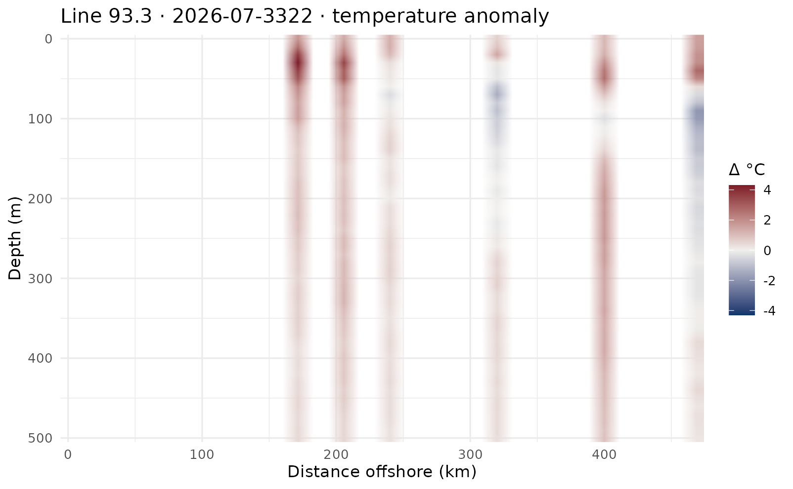
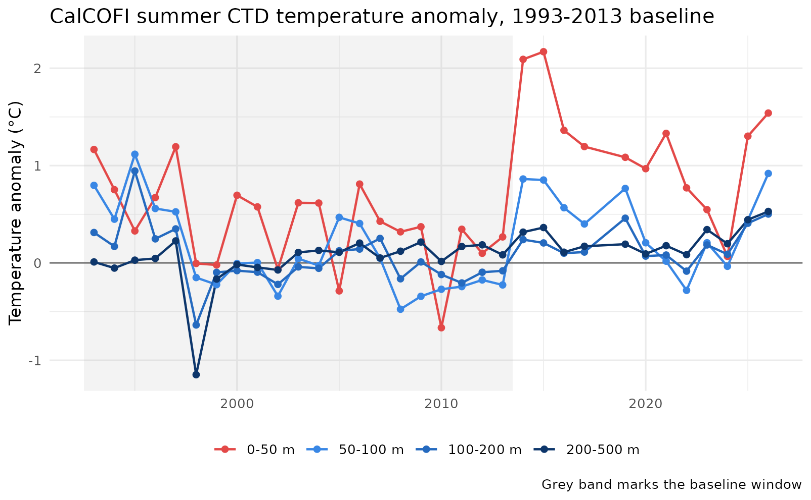

Summer CTD temperature anomalies against a 1993-2013 baseline
Source:vignettes/ctd-temperature-anomalies.Rmd
ctd-temperature-anomalies.RmdWhat this shows
A complete anomaly analysis using five calcofi4r
functions — cc_transect_stations(),
cc_transect_section(), cc_climatology(),
cc_anomaly() and cc_transect_matrix() —
against the public CalCOFI release, with no credentials and no SQL.
The worked question is a real one, from Rasmus Swalethorp (SIO) for a CCIEA workgroup: extract the summer cruise temperature data and generate anomaly plots using 1993–2013 as the baseline.
1993–2013 is newly possible. Until the August 2026 release the 1 m-binned CTD record jumped straight from 1998 to 2003 — calcofi.org publishes Final 1 m-binned products for 1998 and 2003 onward, and only raw cast files before that. A backfill from Jim Wilkinson’s archive closed the gap, so that baseline now means what it says instead of quietly meaning “1998, plus 2003–2013”. The last section quantifies what the difference is worth.
Parameters, stated once
The choice of baseline is the single assumption a reader of an anomaly plot most needs to see, so it lives at the top rather than inside a call.
BASELINE <- c(1993, 2013) # inclusive
SUMMER <- 7:8 # CalCOFI's summer occupation runs Jul-Aug
LINE <- 93.3 # the line off San Diego; every core line works
VAR <- "temperature_ave"
DEPTH_MAX <- 500
MIN_N <- 3 # baseline cells thinner than this are droppedOne transect
A transect here is one CalCOFI line, ordered by station number ascending — nearshore to offshore. There are no endpoints to pick, which is what makes any line × cruise drawable without user input. It is deliberately not the order stations were occupied: that is the ship’s track, so its direction is whichever way the ship steamed, and it is missing on roughly half the release’s cast rows.
cruises <- tbl(con, "sample") |>
filter(dataset_key == "calcofi_ctd-cast", sample_type == "cast") |>
mutate(yr = as.integer(strftime(datetime, "%Y")),
mo = as.integer(strftime(datetime, "%m"))) |>
count(cruise_key, yr, mo, data_stage, name = "n_casts") |>
collect()
summer <- filter(cruises, mo %in% SUMMER)
cruise_recent <- summer |> filter(yr == max(yr)) |> slice(1) |> pull(cruise_key)
sta <- cc_transect_stations(con, LINE, cruise_recent)
sec <- cc_transect_section(
con, LINE, cruise_recent, variables = VAR, depth_max = DEPTH_MAX)
head(sec)
#> # A tibble: 6 × 6
#> cruise_key sta dist_km depth_m variable value
#> <chr> <dbl> <dbl> <dbl> <chr> <dbl>
#> 1 2026-07-3322 25 0 0 temperature_ave 20.3
#> 2 2026-07-3322 25 0 5 temperature_ave 20.3
#> 3 2026-07-3322 25 0 10 temperature_ave 19.4
#> 4 2026-07-3322 25 0 15 temperature_ave 16.1
#> 5 2026-07-3322 25 0 20 temperature_ave 13.7
#> 6 2026-07-3322 25 0 25 temperature_ave 11.8cc_transect_stations() also decides the horizontal
ruler. x = "occupied" (the default) measures between the
stations this cruise actually occupied, so the section fills the plot;
x = "line" measures along the full line, so cruises
covering different extents are comparable in width.
That is not cosmetic. Line 93.3 has not been sampled past station 90 since January 2025, though 113 of the 130 cruises before that reached station 120:
occ <- cc_transect_stations(con, LINE, cruise_recent, x = "occupied")
lin <- cc_transect_stations(con, LINE, cruise_recent, x = "line")
c(occupied_km = max(occ$dist_km), along_line_km = max(lin$dist_km))
#> occupied_km along_line_km
#> 468.7072 470.4155The baseline, and a filter before it
clim <- cc_climatology(
con, variables = VAR, years = BASELINE, depth_max = DEPTH_MAX, min_n = MIN_N)
attr(clim, "baseline")
#> [1] 1993 2013
nrow(clim)
#> [1] 34978cc_climatology() is a plain mean per (station, 5 m depth
bin, calendar month) — the finest grouping CalCOFI’s design supports,
since quarterly-ish cruises over decades give many years per
calendar month at a station but only a handful of days. It returns
clim_n so a thin cell is visible rather than silently
trusted.
Screen the source for physically impossible values
Do this before computing a baseline, not after looking at the result. The released CTD carries a small number of surface readings that are not ocean temperatures — the classic soak artifact, where the sensor is still warm from sitting on deck and has not equilibrated in the first metre or two of the downcast.
There are only 18 such rows in 13.5 million, and the release’s declared bounds (−2 to 40 °C, deliberately set to “impossible” rather than “unusual”) let them through. But they land in the sparsely-sampled northern lines, where an April baseline cell may hold only 2–7 observations in the entire 1993–2013 window — so one 38 °C reading moves that cell’s mean by more than 10 °C, and every other April cruise at that station then reads as a spurious ~11 °C cold anomaly.
The data makes the cut obvious: there is nothing at all between 26 and 35 °C.
temp_all <- tbl(con, "obs") |>
filter(dataset_key == "calcofi_ctd-cast", measurement_type == VAR,
!is.na(measurement_value)) |>
select(measurement_value, depth_min_m) |>
collect()
temp_all |>
mutate(band = cut(measurement_value, c(-Inf, 24, 26, 30, 35, Inf),
labels = c("<24", "24-26", "26-30", "30-35", ">=35"))) |>
count(band)
#> # A tibble: 3 × 2
#> band n
#> <fct> <int>
#> 1 <24 690945
#> 2 24-26 1
#> 3 >=35 18So a regional ceiling well inside that gap removes every artifact and nothing else. This is a client-side screen — the release keeps the rows, and the values are reported to the data provider as Q22 so they can be fixed at source rather than papered over by every downstream user in their own way.
# Two-sided, on purpose. An earlier draft screened only the upper bound, because
# the artifact I had in front of me was a hot one — which would have sailed past
# the cold artifact that motivated this whole exercise (a failed sensor averaged
# into TempAve produced values near -47 degC). A screen that can only catch the
# failure you already know about is not a screen.
#
# 0 and 30 degC: roughly 5 degC outside the coldest and warmest genuine CalCOFI
# readings, and far outside anything the region produces. Nothing legitimate is
# near either bound.
TEMP_RANGE_REGIONAL <- c(0, 30)
screen <- function(d, col = "measurement_value")
filter(d, .data[[col]] >= TEMP_RANGE_REGIONAL[1],
.data[[col]] <= TEMP_RANGE_REGIONAL[2])
clim_screened <- cc_climatology(
con, variables = VAR, years = BASELINE,
depth_max = DEPTH_MAX, min_n = MIN_N) |>
filter(clim_mean >= TEMP_RANGE_REGIONAL[1],
clim_mean <= TEMP_RANGE_REGIONAL[2])
nrow(clim) - nrow(clim_screened) # baseline cells the screen removes
#> [1] 1Anomalies for one section
cc_anomaly() differences a section against the
climatology, matched on station, calendar month and depth bin. A cell
with no baseline comes back NA, never 0 —
an unsampled baseline is not a zero anomaly, and collapsing the two is
how a plot ends up colouring “normal” somewhere never measured.
anom <- cc_anomaly(sec, clim_screened, sta)
round(100 * mean(!is.na(anom$anomaly))) # % of this section with a baseline
#> [1] 75
range(anom$anomaly, na.rm = TRUE)
#> [1] -3.140529 5.376190
lim <- max(abs(anom$anomaly), na.rm = TRUE)
ggplot(anom, aes(dist_km, depth_m, fill = anomaly)) +
geom_raster(interpolate = TRUE) +
scale_fill_gradient2(
low = "#0d366b", mid = "#f0efec", high = "#7d1b28",
midpoint = 0, limits = c(-lim, lim), na.value = "transparent",
name = "Δ °C") +
scale_y_reverse(expand = c(0, 0)) +
scale_x_continuous(expand = c(0, 0)) +
labs(x = "Distance offshore (km)", y = "Depth (m)",
title = paste0("Line ", LINE, " · ", cruise_recent,
" · temperature anomaly")) +
theme_minimal(base_size = 11)
For a heatmap that wants a matrix rather than a long table,
cc_transect_matrix() pivots to
z[[depth]][[station]] with x the station
distances — the shape a Plotly or ODV-style section takes directly.
m <- cc_transect_matrix(anom, value = "anomaly")
str(m, max.level = 1)
#> List of 4
#> $ x : num [1:11] 0 11.3 62.7 99.8 135.6 ...
#> $ sta: num [1:11] 25 30 35 40 45 50 55 60 70 80 ...
#> $ y : num [1:88] 0 5 10 15 20 25 30 35 40 45 ...
#> $ z :List of 88All summer cruises: an anomaly time series
The headline figure. Rather than sectioning every cruise, difference every summer observation against the same baseline and average by depth layer.
Two choices worth stating, because both are ways this goes quietly wrong:
- Average the anomalies, not the values. Averaging temperatures first would let a year that happened to sample more nearshore stations read as cold purely from where it sampled. Differencing per station and depth removes each station’s own climate before any averaging.
- Only cells with a real baseline count. A station newly added to the grid has no 1993–2013 history; treating that as a zero anomaly drags every mean toward zero by an amount nobody can see.
obs_summer <- tbl(con, "obs") |>
filter(dataset_key == "calcofi_ctd-cast", measurement_type == VAR,
!is.na(measurement_value), !is.na(depth_min_m), !is.na(datetime),
depth_min_m <= DEPTH_MAX) |>
mutate(yr = as.integer(strftime(datetime, "%Y")),
mon = as.integer(strftime(datetime, "%m"))) |>
filter(mon %in% SUMMER) |>
mutate(depth_m = round(depth_min_m / 5) * 5) |>
select(grid_key, cruise_key, yr, mon, depth_m,
variable = measurement_type, value = measurement_value) |>
collect() |>
screen("value") # the same client-side screen, applied to the data
anom_summer <- obs_summer |>
inner_join(clim_screened,
by = c("grid_key", "mon" = "month", "depth_m", "variable")) |>
mutate(anomaly = value - clim_mean)
series <- anom_summer |>
mutate(layer = cut(depth_m, c(-1, 50, 100, 200, 500),
labels = c("0-50 m", "50-100 m", "100-200 m", "200-500 m"))) |>
filter(!is.na(layer)) |>
summarize(anomaly = mean(anomaly), n = n(), .by = c(yr, layer))
head(series)
#> # A tibble: 6 × 4
#> yr layer anomaly n
#> <int> <fct> <dbl> <int>
#> 1 1994 50-100 m 0.396 830
#> 2 1996 50-100 m 0.512 929
#> 3 2003 50-100 m -0.0955 776
#> 4 2006 50-100 m 0.344 741
#> 5 2013 50-100 m -0.345 757
#> 6 2021 50-100 m -0.184 772A sanity check before reading anything into it: the baseline years must sit near zero by construction, and the series should reproduce events we already know happened. It does — 2014-15 is the marine heatwave (“the Blob”), 2016 its El Niño tail, and 2026 is warm at every depth rather than just at the surface. 2018 is absent because there was no summer occupation that year.
ggplot(series, aes(yr, anomaly, colour = layer)) +
annotate("rect", xmin = BASELINE[1] - .5, xmax = BASELINE[2] + .5,
ymin = -Inf, ymax = Inf, fill = "grey70", alpha = .16) +
geom_hline(yintercept = 0, linewidth = .4, colour = "grey40") +
geom_line(linewidth = .7) +
geom_point(size = 1.6) +
scale_colour_manual(values = c("#e34948", "#3987e5", "#256abf", "#0d366b"),
name = NULL) +
labs(x = NULL, y = "Temperature anomaly (°C)",
title = paste0("CalCOFI summer CTD temperature anomaly, ",
BASELINE[1], "-", BASELINE[2], " baseline"),
caption = "Grey band marks the baseline window") +
theme_minimal(base_size = 11) +
theme(legend.position = "bottom")
What the backfill is worth
The same analysis against a 1998–2013 baseline — what would have been possible before the 1993–2002 cruises were ingested.
clim_98 <- cc_climatology(
con, variables = VAR, years = c(1998, 2013),
depth_max = DEPTH_MAX, min_n = MIN_N) |>
filter(clim_mean >= TEMP_RANGE_REGIONAL[1],
clim_mean <= TEMP_RANGE_REGIONAL[2])
cmp <- obs_summer |>
inner_join(clim_98, by = c("grid_key", "mon" = "month", "depth_m", "variable")) |>
mutate(anomaly_98 = value - clim_mean) |>
filter(depth_m <= 50) |>
summarize(anomaly_98 = mean(anomaly_98), .by = yr)
comparison <- series |>
filter(layer == "0-50 m") |>
select(yr, anomaly_9313 = anomaly) |>
inner_join(cmp, by = "yr") |>
mutate(difference = anomaly_9313 - anomaly_98)
summary(abs(comparison$difference))
#> Min. 1st Qu. Median Mean 3rd Qu. Max.
#> 0.04182 0.06830 0.07321 0.16890 0.31969 0.50233Reading it honestly
The baseline is 21 years, not a 30-year WMO normal. CalCOFI’s 1 m-binned CTD record does not reach back far enough for one without splicing in ship hydrocast data of a different vintage. 1993–2013 does span both the 1997–98 El Niño and the 1998–99 La Niña, and it ends before the 2014–16 marine heatwave — so the heatwave and everything since read as departures rather than being folded into the normal.
Coverage is not constant. A spatial mean over “the line” covers different ocean in different years. The per-station differencing above removes each station’s own climate, which is most of the problem — but a year that skipped the offshore stations still has no offshore signal in it.
Preliminary cruises are fine for temperature, and not for the
corrected series. Temperature is not bottle-corrected, so a
preliminary_without_bottle cruise carries the temperature
it always will. Salinity, oxygen and chlorophyll on those cruises are a
different matter: the corrected forms do not exist until the bottle
merge runs, and the uncorrected sensor series (salinity_1,
oxygen_ml_l_1) are what is available.
The two-sensor averages are recomputed during ingest, not
taken as shipped. The source CSVs carry pre-computed
TempAve, SaltAve_Corr,
OxAve_StaCorr and OxAveuM_StaCorr, and where
one sensor is missing or has failed those sometimes fold the bad sensor
in. The obvious form averages in the -99 missing marker;
the dangerous form does not — a failed sensor reading −18 °C beside a
good one at 20 °C yields an average of 0.77 °C, which is inside any
plausible range and worth an 18 °C false cold anomaly. The ingest treats
a sensor outside its declared bounds as absent and averages over what
remains. Reading the source CSVs directly gives you the unrepaired
values; see Q21.